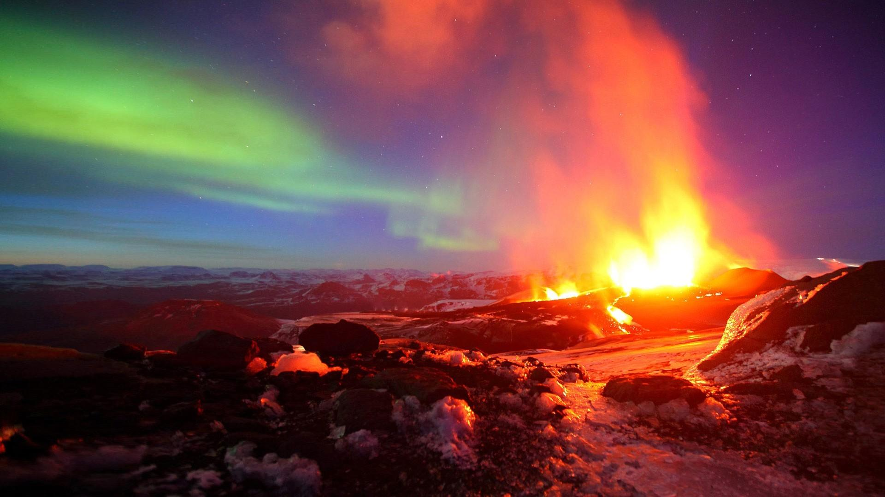

Los volcanes se pueden clasificar de varias maneras, dependiendo de diferentes criterios:
Por su actividad
- Volcanes activos: Son aquellos que han tenido al menos una erupción en los últimos 10,000 años y que tienen el potencial de entrar en erupción en el futuro.
- Volcanes inactivos o durmientes: Son aquellos que no han tenido erupciones en tiempos históricos pero que podrían reactivarse en el futuro.
- Volcanes extintos: Son aquellos que no han tenido actividad en un largo período de tiempo y es poco probable que vuelvan a entrar en erupción.
Por su forma
- Volcanes en escudo: Tienen una forma de lomo ancho y suave, caracterizados por erupciones de lava basáltica fluida que fluye fácilmente por las laderas del volcán, formando capas delgadas.
- Volcanes compuestos o estratovolcanes: Tienen una forma cónica pronunciada y están compuestos de capas alternas de lava endurecida, ceniza volcánica y otros materiales. Son conocidos por erupciones explosivas.
- Volcanes extintos: Son aquellos que no han tenido actividad en un largo período de tiempo y es poco probable que vuelvan a entrar en erupción.